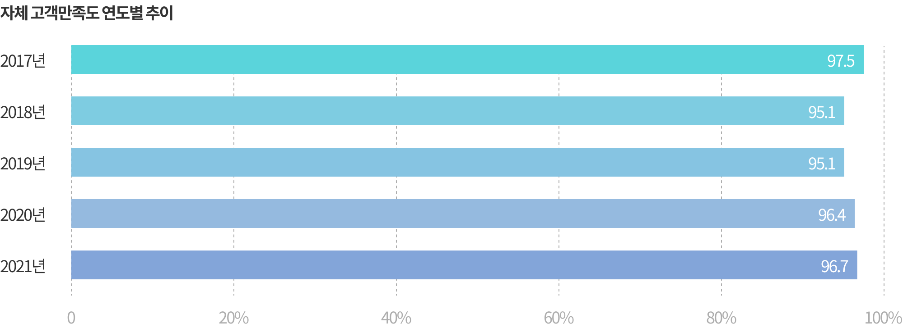

고객만족도 조사실시


공공기관 고객만족도(PCSI) 조사
- 조사목적 : 공공기관 서비스 수준의 객관적 측정을 통해 대국민 서비스 제고와 국민편익 증진
- 조사근거 : 공공기관 운영에 관한 법률 제13조 2항
- 조사기간 : 2021년 12월 ~ 2022년 2월
- 조사수행 : 기획재정부 통합 주관 및 ㈜한국능률협회컨설팅 실시
- 조사내용 : 공공부문 고객만족도 평가모델(PCSI)을 활용하여 서비스에 대한 고객만족도 수준 조사
- 조사결과 : 2021년 PCSI 점수 90.7점

자체 고객만족도 조사
- 조사목적 : 중진공 제공 서비스에 대한 고객만족 수준의 객관적 측정과 개선사항 도출
- 조사기간 : 2021년 1월 ~ 2021년 12월
- 조사내용 : 전화조사를 활용하여 중진공 사업의 서비스 이용고객을 대상으로 만족도 조사 실시
- 조사결과 : 2021년 고객만족도 점수 96.7점
